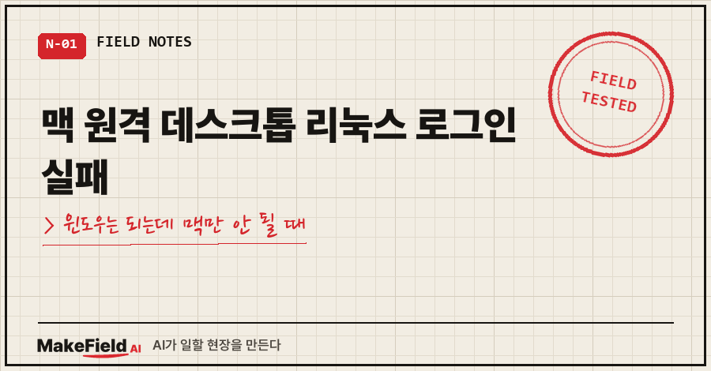
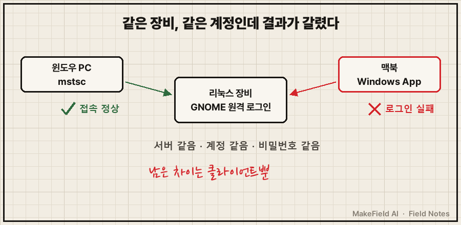
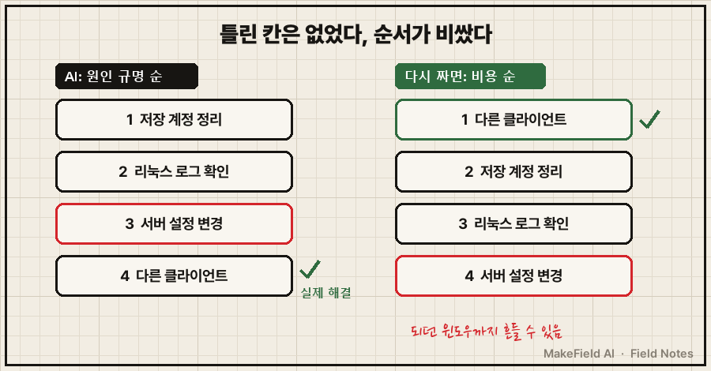
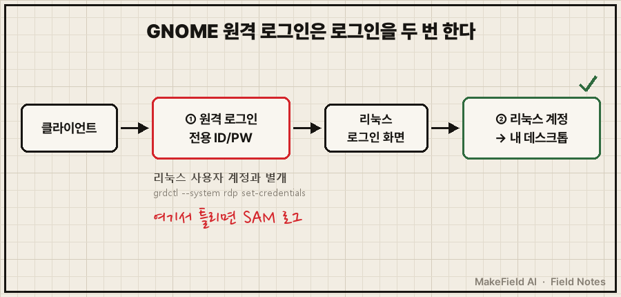

윈도우 PC에서는 리눅스 장비 원격 화면이 잘 떠요.
그런데 맥북에서 같은 계정, 같은 비밀번호를 넣으면 로그인이 안 됩니다.
짧게 답부터 드릴게요. 맥 원격 데스크톱이 리눅스(GNOME 원격 데스크톱)에 로그인 실패하는데 윈도우 기본 원격 데스크톱은 된다면, 서버와 계정은 이미 정상이라는 뜻이니 로그를 파기 전에 맥 쪽 클라이언트부터 다른 걸로 바꿔 보세요. 저는 마이크로소프트 Windows App을 Thincast Remote Desktop으로 바꾸자 바로 붙었어요. (2026년 11월, 제 맥북 기준)
저는 15년 가까이 공장 설비 제어 일을 해 왔어요. 고장 나면 멀쩡한 채널과 고장 난 채널을 나란히 놓고 차이부터 보는 게 몸에 밴 사람인데요.
이번엔 그 습관을 AI 진단표 앞에서 잠깐 잊었습니다..
1. 윈도우는 되는데 맥만 로그인 실패, 상황은 이랬어요
같은 장비에 같은 계정으로 붙는데, 클라이언트만 다르고 결과가 갈렸어요.
- 서버: 리눅스 장비, GNOME 원격 데스크톱을 '원격 로그인'(시스템 모드)으로 켜 둠
- 윈도우 PC: 기본 원격 데스크톱(
mstsc) → 정상 접속 - 맥북: 마이크로소프트 Windows App → 같은 계정·비번인데 로그인 실패
GNOME 원격 데스크톱에는 모드가 둘 있어요. '데스크톱 공유'는 이미 로그인해 있는 화면을 같이 보는 방식이고, '원격 로그인'은 로그인 화면부터 원격으로 받아서 내 계정으로 들어가는 방식입니다. 제 장비는 뒤쪽이었어요.

2. AI가 짠 진단 5단계, 틀린 말은 하나도 없었어요
AI한테 증상을 그대로 말했더니 먼저 외부 포럼을 뒤졌어요. 페도라·록키 리눅스·Devolutions 포럼 세 곳에서 비슷한 보고를 찾아왔습니다. 윈도우에선 되는데 맥 클라이언트에서만 검은 화면이 뜨거나 인증에서 막힌다는 글들이었어요.
AI 결론은 "맥 Windows App과 GNOME 원격 데스크톱의 호환 문제로 추정, 공식 원인은 확인 안 됨"이었고, 진단 순서를 이렇게 짰어요.
- 맥 Windows App에 저장된 계정 지우고 '필요할 때 묻기'로 바꾸기
- 실패 직후 리눅스 쪽 로그 보기
- '데스크톱 공유'는 끄고 '원격 로그인'만 켜기
- 그래도 안 되면 다른 클라이언트 (FreeRDP, Jump Desktop, Royal TSX)
- 화면이 꼭 필요 없으면 SSH로 대체
2번에 쓸 명령도 미리 적어 줬어요.
journalctl -b --since "5 min ago" | grep -i -E "remote-desktop|credssp|nla|redirect"전부 맞는 말이었어요. 그런데 저는 그날 "나중에 하자" 하고 덮었고, 그대로 나흘이 갔습니다.
3. 나흘 뒤, 로그 한 줄 안 보고 해결했어요
다른 클라이언트를 깔았더니 그냥 됐어요. 나흘 뒤 맥에 Thincast Remote Desktop을 깔아 같은 계정으로 붙어 보니 원격 화면이 정상으로 떴습니다. 그날 제가 AI한테 남긴 말이 이거예요.
thincast remote desktop으로 다 해결했다. 잘된다.
맥의원격데스크탑이 리눅스와 뭐가 안맞았던것같다.웃긴 건 Thincast가 AI 후보 목록에 없었다는 거예요. 4번 목록에 없던 걸 제가 따로 골랐죠. 나중에 찾아보니 Thincast 공식 사이트가 이 앱을 "FreeRDP 기반의 무료 RDP 클라이언트"라고 소개하더라고요. 4번 목록 맨 앞에 있던 FreeRDP와 뿌리가 같았던 셈입니다. 개인 용도는 무료라고 적혀 있어요.
진단 1~5번은 하나도 실행하지 않고 안건을 닫았어요. 그래서 진짜 원인은 지금도 몰라요. 이 글에서도 원인은 '추정'으로만 남겨 둡니다.
4. AI는 '원인 순서', 저는 '비용 순서'였어요
다시 보면 AI 표가 틀린 게 아니라 순서가 비쌌어요.
| 순서 | AI 진단표 (원인 규명 순) | 다시 짜면 (비용 순) |
|---|---|---|
| 1 | 맥 앱 저장 계정 정리 | 다른 클라이언트 설치 (깔고 붙어 보기만 하면 됨) |
| 2 | 리눅스 로그 확인 | 맥 앱 저장 계정 정리 |
| 3 | 서버 모드 설정 변경 | 리눅스 로그 확인 |
| 4 | 다른 클라이언트 | 서버 설정 변경 (윈도우 접속까지 흔들 수 있음) |
윈도우 클라이언트가 붙는 순간, 서버와 계정은 이미 정상으로 판명난 거예요. 남은 용의자는 맥 클라이언트 하나뿐이니 그걸 바꾸는 실험이 제일 쌌습니다. 반대로 3번 서버 설정은 잘 되던 윈도우 접속까지 건드릴 수 있는 제일 비싼 실험이었고요.
AI는 원인을 알아내는 순서로 표를 짜요. 저는 일을 끝내는 순서가 필요했고요. 그래서 AI한테 진단표를 받으면 "이걸 시간·위험 적은 순으로 다시 줄 세워 줘"라고 한 번 더 물어볼 만해요. 여러분은 AI 진단표를 받으면 위에서부터 그대로 하시나요?

5. 그래도 원인이 궁금하다면, 원격 로그인은 두 번 로그인해요
나중에 윈도우 쪽 접속 파일을 정리하다가 알게 된 게 있어요. GNOME 원격 로그인은 로그인을 두 번 합니다.
- 원격 로그인 전용 아이디·비밀번호 (리눅스 사용자 계정과 별개로, 서버에서
grdctl --system rdp set-credentials로 등록) - 그다음 뜨는 리눅스 로그인 화면에서 내 리눅스 계정
SUSE 공식 문서에도 원격 사용자가 "first authenticate with system-wide credentials to access the graphical login screen"이라고, 먼저 시스템 공통 자격 증명으로 로그인 화면까지 간다고 적혀 있어요. 1단계 아이디가 안 맞으면 제 장비 서버 로그에는 이 줄이 찍혔습니다.
Could not find user in SAM databaseDevolutions 포럼에서 같은 로그를 두고 GNOME 메인테이너가 "The client sends wrong credentials", 즉 클라이언트가 다음 단계로 넘겨질 때(redirection) 엉뚱한 자격 증명을 보낸 클라이언트 쪽 오류라고 답한 기록이 있어요. 제 맥도 이 경우였을 수 있지만, 저는 맥 쪽 로그를 안 봤으니 확인은 안 된 추정입니다. 맥 OS와 앱 버전도 그때 적어 두지 않았어요.

남는 질문 세 가지
Q. 맥 Windows App 설정만 바꿔서 해결할 수는 없나요?
될 수도 있어요. AI 표 1번(저장 계정 지우고 '필요할 때 묻기')이 그 방향이에요. 저는 해 보지 않아서 된다 안 된다 말씀은 못 드려요. 시간이 있다면 그것부터, 급하면 클라이언트 교체부터 해 보세요.
Q. 윈도우에서도 맥에서도 다 안 되면요?
그땐 클라이언트 탓이 아니라 서버나 계정 쪽일 가능성이 커요. 위 2단계 로그인 중 1단계 아이디를 리눅스 계정으로 넣고 있지 않은지부터 보세요. 윈도우 쪽에서 계정이 계속 잠기는 경우는 원격 데스크톱 연결 안됨, 계정이 하루 38번 잠기고 있었어요에 따로 적었어요.
Q. 원인을 모르고 넘어가도 괜찮을까요?
제 기준은 "다시 터졌을 때 바로 쓸 우회로가 있나"예요. 맥은 Thincast로 붙는다고 기록해 뒀고, 같은 진단은 다시 꺼내지 않기로 메모해 뒀습니다. 원인 규명은 그게 돈이나 시간을 아껴 줄 때 하면 돼요.
되는 쪽과 안 되는 쪽이 동시에 있다면, 그 차이 하나가 가장 싼 실험 대상입니다.
AI가 짜 준 진단표를 우리 현장 사정에 맞는 '싼 순서'로 다시 세우는 법이 궁금하시면, makefield.ai에서 사례를 나눠 드려요.
출처
- Fedora Discussion, "Remote logins from Window, can't login from MacOS (Gnome RDP)" → https://discussion.fedoraproject.org/t/remote-logins-from-window-cant-login-from-macos-gnome-rdp/114842
- Rocky Linux Forum, "RDP authentication failure Rocky 10" → https://forums.rockylinux.org/t/rdp-authentication-failure-rocky-10/20096
- Devolutions Forum, GNOME Remote Desktop 접속 실패 스레드("The client sends wrong credentials") → https://forum.devolutions.net/topics/42273/cant-connect-to-gnome-remote-desktop-session-on-windows-1011-client-se
- SUSE, Configuring a Remote Desktop Server on SLES 16.0 → https://documentation.suse.com/sles/16.0/html/SLES-gnome-remote-desktop/
- Thincast Client 제품 페이지("a free multi-platform RDP Client based on FreeRDP") → https://www.thincast.com/en/products/client
- 실측: 2026-11-06~11 개인 맥북·윈도우 PC → 리눅스 장비 원격 접속 기록(장비명·주소·계정 제외), 출처 확인 2026-11-12
태그: #맥원격데스크톱리눅스 #맥원격데스크톱 #WindowsApp로그인실패 #우분투원격데스크톱 #GNOME원격데스크톱 #리눅스원격접속 #RDP접속안됨 #원격로그인 #Thincast #FreeRDP #mstsc #맥북리눅스 #막힐때해결 #AI문제해결 #MakeFieldAI